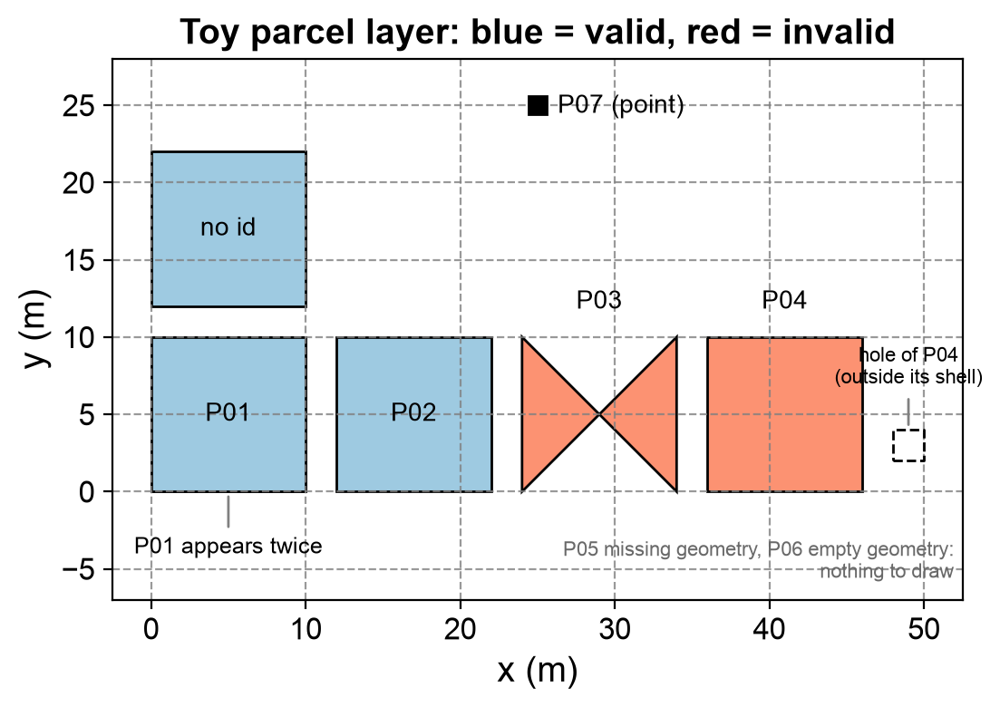
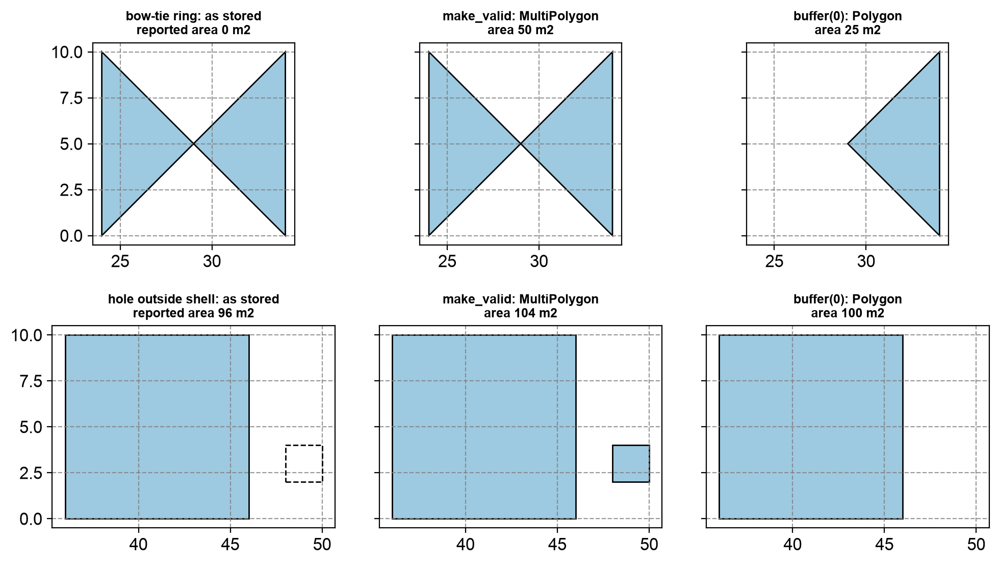

Remark
Please be aware that these lecture notes are accessible online in an ‘early access’ format. They are actively being developed, and certain sections will be further enriched to provide a comprehensive understanding of the subject matter.
1.7. Spatial Data Quality and Metadata#
1.7.1. Learning objectives#
By the end of this section, you should be able to:
explain why quality checks belong inside the pipeline rather than at its end;
distinguish missing, empty, and invalid geometries, and state the validity rules for points, lines, and polygons;
profile a layer for geometry types, bounds, CRS, duplicate records, and missing identifiers;
repair invalid geometries with
make_valid()and compare a layer before and after the repair;explain the difference between
set_crs()andto_crs(); andwrite a metadata record that lets another analyst reproduce your result.
Section goal
Run a standard set of structural checks on every layer before analysing it, repair only what you can justify and inspect, and record what you did in a metadata card that lets someone else reproduce the result.
1.7.2. Why quality is part of the analysis#
A spatial result is only as reliable as its inputs and assumptions. A layer can look correct on a map while containing invalid geometries, duplicate features, missing coordinates, or an undocumented CRS. Treat quality checks as a pipeline stage rather than as a last-minute repair.
Quality has several dimensions. Structural checks ask whether each geometry is well formed, attribute checks ask whether identifiers and values are present, and reference checks ask whether the coordinate reference system (CRS) is stated and correct. Questions such as how closely a boundary follows the real world need independent reference data, so this section stays with the structural, attribute, and reference checks that can be automated, plus the documentation that makes them reusable. Standards describe quality through elements such as completeness, logical consistency, positional accuracy, thematic quality, and temporal quality [Geographic information — Data quality — Part 1: General requirements, 2023]; the checks below address mainly logical consistency and completeness.
1.7.3. A practical quality checklist#
For every input layer, record:
source, download date, license, and geographic coverage;
feature count, columns, geometry types, bounds, and CRS;
missing identifiers, duplicate records, and null geometries;
invalid geometries and unexpected empty features; and
the units, precision, and transformations required for analysis.
Items 1 and 5 are documentation tasks that we return to in the metadata part of this section. Items 2 to 4 can be automated, and the rest of the section builds that automation step by step, starting with what the words missing, empty, and invalid mean.
1.7.3.1. Missing, empty, and invalid geometries#
Three situations are easy to confuse. A missing geometry is a null in the geometry column: the record has attributes but no shape. An empty geometry is a real geometry object without coordinates, such as POLYGON EMPTY; it has a type but no extent, and its area is zero. An invalid geometry has coordinates but breaks the rules that its type must obey. GeoPandas [Jordahl et al., 2020] and Shapely [Gillies et al., 2026] follow the OGC Simple Features rules [Herring, 2011], which are checked by the GEOS library [GEOS: Geometry Engine - Open Source, 2024]. These rules matter because overlay, area, and union operations assume them, so an invalid input can raise an error or, worse, return a wrong number without any warning.
Table 1.7 states the rules for each geometry type.
Geometry type |
A geometry is valid when |
Typical violation |
|---|---|---|
Point |
Its coordinates are finite numbers. |
A NaN or infinite coordinate. |
LineString |
It has at least two distinct vertices. It may cross itself. |
Two identical vertices, so the line has no length. |
Polygon |
Every ring is closed, has at least three distinct vertices, and does not cross itself. Holes lie inside the shell and do not overlap one another. Rings touch only at single points, and the interior is connected. |
A bow-tie ring, a hole outside the shell, overlapping holes. |
MultiPolygon |
Every part is a valid polygon, and parts touch at most at points, so their interiors never overlap. |
Two overlapping parts stored as one feature. |
The next cell builds one tiny example of each kind of violation from Table 1.7, plus an empty polygon and a valid square for comparison, and asks Shapely why each one fails. The function is_valid_reason returns a short message that names the problem and the location of the first failure.
example type is_empty is_valid reason
point with a NaN coordinate Point False False Invalid Coordinate[nan 1]
line with two identical vertices LineString False False Too few points in geometry component[0 0]
line that crosses itself LineString False True Valid Geometry
polygon with a bow-tie ring Polygon False False Self-intersection[2 2]
polygon with a hole outside the shell Polygon False False Hole lies outside shell[12 2]
polygon with overlapping holes Polygon False False Self-intersection[5 3]
multipolygon with overlapping parts MultiPolygon False False Self-intersection[2 4]
empty polygon Polygon True True Valid Geometry
valid square Polygon False True Valid Geometry
crossing line -> is_valid: True | is_simple: False
Read the reason column as a diagnosis rather than a verdict. A bow-tie ring and overlapping holes are both reported as a self-intersection, while a hole that lies outside its shell has its own message. Two results deserve attention. The empty polygon is valid: emptiness is a separate property, so is_valid cannot find it and is_empty must be checked on its own. The crossing line is valid but not simple: validity asks whether a geometry is well formed, whereas simplicity asks whether a line passes through the same point twice, and many valid layers (a looping river, for example) contain lines that are not simple.
One further pitfall affects counting. GeoPandas returns False from is_valid for a missing geometry but True for an empty one. A count of ~is_valid therefore adds missing geometries to the invalid tally without any warning, and the toy layer below shows the size of that error.
1.7.3.2. Duplicates, identifiers, and unexpected types#
The remaining checklist items need no new geometry theory. A duplicate record is a row that repeats another row’s identifier and shape. Comparing shapes through their well-known binary (WKB) representation catches copies, provided that normalize() is applied first so that the starting vertex and ring direction do not matter. A missing identifier prevents joins to attribute tables and makes a record impossible to cite. An unexpected geometry type, such as a point in a layer of parcels, usually means that a different feature class was merged in by mistake. Table 1.8 collects every defect in this section with a check and a typical response.
Defect |
What it means |
Check |
Typical response |
|---|---|---|---|
Missing geometry |
The geometry cell is null. |
|
Cannot be repaired. Trace it to the source, then drop it from spatial steps and log it. |
Empty geometry |
A geometry object with no coordinates. |
|
Treat like a missing geometry and log the decision. |
Invalid geometry |
Coordinates exist but break the validity rules. |
|
|
Duplicate record |
The same feature appears more than once. |
|
Keep one copy and log the count. |
Missing identifier |
The key column is null. |
|
Recover the key from the source, or flag the row. |
Unexpected geometry type |
A type that does not belong in the layer. |
|
Inspect, then filter or set aside. |
Missing or wrong CRS |
|
|
|
1.7.3.3. Profiling a layer#
A profile is a compact summary produced before any analysis. The cells below reload the Calgary city boundary layer [Open Calgary: The City of Calgary Open Data Portal, 2026] introduced earlier in this chapter and report the row count, CRS, geometry types, missing geometries, and invalid geometries. The invalid count is taken only over rows that have a geometry, so that missing geometries are not mixed into it.
{'rows': 1, 'crs': 'EPSG:4326', 'geometry_types': {'MultiPolygon': 1}, 'missing_geometry': 0, 'invalid_geometry': 0}
The stored output reports one feature in EPSG:4326, a single MultiPolygon, no missing geometry, and no invalid geometry, so this layer passes the structural checks. The profile also carries a warning: EPSG:4326 is a geographic CRS whose units are degrees, so lengths, areas, and buffer distances computed directly on this layer would be in degrees. Any metric measurement should be made after projecting the layer.
One clean row cannot show what the checks catch. The next cell builds a small parcel layer in a projected CRS, with coordinates in metres, and plants one defect of each kind: a bow-tie ring (P03), a hole outside its shell (P04), a missing geometry (P05), an empty geometry (P06), a repeated record (the second P01), a parcel with no identifier, and a stray point (P07). It also compares the naive invalid count with the corrected one.
naive invalid count : 3
corrected invalid count: 2
missing geometries : 1
empty geometries : 1
The naive count reports 3 invalid features, but only 2 are invalid. The third is the missing geometry, which is_valid reports as False. This is why the profile above counts invalid geometries only among rows that have one. The tallies also show 1 missing and 1 empty geometry, which no validity test would have found.
The next cell collects all the checks into one function so that the same profile can be repeated for every layer.
rows 9
crs EPSG:32611
geometry_types {'Polygon': 7, 'missing': 1, 'Point': 1}
bounds [0.0, 0.0, 46.0, 25.0]
missing_geometry 1
empty_geometry 1
invalid_geometry 2
duplicate_records 1
missing_id 1
The report finds each planted defect: 2 invalid geometries (P03 and P04), 1 missing and 1 empty geometry, 1 duplicate record, 1 missing identifier, and a geometry mix of 7 polygons, 1 point, and 1 missing. The bounds, [0.0, 0.0, 46.0, 25.0], ignore missing and empty geometries; a layer whose features were all empty would report NaN bounds. Fig. 1.10 draws the layer. Missing and empty geometries cannot be drawn at all, which is a lesson in itself: a map hides these defects, and a profile finds them.


Fig. 1.10 The toy parcel layer: valid parcels in blue, invalid parcels in red, with notes for the hole outside P04, the duplicate P01, and the stray point P07. The missing (P05) and empty (P06) geometries cannot be drawn.#
In Fig. 1.10, only the two red parcels, P03 and P04, show their defect. The duplicate P01 is drawn twice on top of itself, the parcel with no identifier looks like any other, and the stray point stands out only because it is the sole point. A map therefore reveals at most half of the defects the profile counts.
1.7.4. Repair carefully#
Repairs should be reproducible and auditable. Keep the original layer, create a
new cleaned layer, and compare counts, bounds, and total area before and after.
Use make_valid() where available, and inspect repaired features rather than
assuming every repair is appropriate. Never use set_crs() to fix coordinates
that are already expressed in a different CRS; use to_crs() to transform them.
Two points apply to the comparison. First, measure area in a projected CRS. In a layer such as the Calgary boundary in EPSG:4326, area is in square degrees, which is not a usable unit, so reproject with to_crs() to a metric CRS first. Second, understand what make_valid() does. It rebuilds a broken geometry from the same line work, splitting it at every self-intersection, so a bow-tie ring becomes a MultiPolygon with one part per lobe. The result can change type, and a collapsed polygon may even become a line or a point. The older buffer(0) trick also returns a valid polygon, but it can discard parts of the input, so it is not a safe default. Neither function knows what the data was meant to represent, which is why repairs must be inspected.
The next cell repairs the toy layer. A missing geometry cannot be repaired, so only rows that have a geometry are passed to make_valid(). Rows that cannot be used in an area analysis are set aside in a separate layer instead of being deleted silently, and the before and after layers are compared in metres.
parcel_id type_before type_after area_before area_after
P03 Polygon MultiPolygon 0.0 50.0
P04 Polygon MultiPolygon 96.0 104.0
rejected rows: ['P05', 'P06', 'P01', 'P07'] (kept aside for review)
rows before: 9 after: 5
bounds before: [0.0, 0.0, 46.0, 25.0] after: [0.0, 0.0, 50.0, 22.0]
total_area_m2 before: 496.0 after: 454.0
Both invalid parcels change type from Polygon to MultiPolygon, and their areas change too. P03 reported an area of 0 m² before the repair although it covers 50 m²: the two lobes of a bow-tie are traced in opposite directions, so their signed areas cancel. P04 rose from 96 to 104 m². The 96 m² was the 100 m² shell minus a hole that lies outside it, and after the repair the hole region became a separate 4 m² part.
The summary shows the consequences. The layer shrank from 9 to 5 rows, the bounds grew to x = 50 because of that new part, and the total area went from 496 to 454 m². Four rows were set aside: P05 (missing), P06 (empty), the second P01 (duplicate), and P07 (point). The row without an identifier was kept because its geometry is usable; it is recorded as a limitation instead. Whether P04’s extra part should stay is an analytical decision, and the table and Fig. 1.11 compare the two repair methods on both defects.
defect method type area_m2
bow-tie ring as stored Polygon 0.0
bow-tie ring make_valid MultiPolygon 50.0
bow-tie ring buffer(0) Polygon 25.0
hole outside shell as stored Polygon 96.0
hole outside shell make_valid MultiPolygon 104.0
hole outside shell buffer(0) Polygon 100.0


Fig. 1.11 Two defective parcels as stored (left), after make_valid (centre), and after buffer(0) (right): a bow-tie ring in the top row and a hole outside its shell in the bottom row.#
In the top row of Fig. 1.11, make_valid() keeps both lobes of the bow-tie (50 m²), whereas buffer(0) silently keeps only one (25 m²). In the bottom row the roles reverse: make_valid() turns the misplaced hole into a new 4 m² polygon (104 m²), while buffer(0) drops it and returns the shell alone (100 m²), which is probably what the data’s author intended. Neither method is right in general. The rule is to repair, look at the repaired features, and record the decision. The exact output of buffer(0) can differ between GEOS versions.
1.7.4.1. Labelling versus transforming a CRS#
A CRS label and the numbers it describes are separate pieces of information. set_crs() changes only the label and leaves the coordinates alone. It is the right tool when a layer has no CRS, or the wrong one, and you know what the coordinates really are. By default GeoPandas refuses to relabel a layer that already has a CRS, and allow_override=True switches that protection off. to_crs() keeps each feature at the same place on Earth and recomputes its coordinates for a different CRS. Mixing the two up is a classic way to place features thousands of kilometres from where they belong. The next cell applies both to one point, then shows how to recognise and fix a layer whose label is wrong.
to_crs : [705357.2, 5659470.2]
set_crs : [-114.07, 51.05]
distance between the two results (km): 5703
mislabelled bounds: [705357, 5659470, 705357, 5659470] -> far outside the +/-180 and +/-90 degree limits
recovered lon/lat: [-114.07, 51.05]
Transforming gives metre coordinates of about 705,357 m east and 5,659,470 m north. Relabelling the degree values as UTM metres instead leaves the point at (−114.07, 51.05), which is 5,703 km from the correct position. The second half shows the reverse error: metre coordinates that carry the label EPSG:4326. Their bounds sit far outside the ±180° and ±90° limits of a degree CRS, which makes total_bounds a quick sanity check to add to any profile. Here relabelling is correct, because the coordinates are right and only the label is wrong, and transforming back to degrees recovers the original longitude and latitude.
1.7.5. Metadata as a hand-off#
A useful metadata record names the source, CRS, geometry type, processing steps, software versions, and known limitations [Geographic information — Metadata — Part 1: Fundamentals, 2014, Wilkinson et al., 2016]. This record lets another analyst recreate the result and distinguish a source-data problem from an analytical choice.
Table 1.9 lists the fields of a data card and the reason for each, an idea in the spirit of datasheets for datasets [Gebru et al., 2021]. Writing the card as structured data, for example JSON, lets it travel next to the layer and be read by code as well as by people.
Field |
What to record |
Why it matters |
|---|---|---|
Source and license |
Publisher, download date, license, and version or release. |
Lets others fetch the same data and tells them what they may do with it. |
Coverage |
The area and time period the layer covers. |
Separates “no features here” from “not covered by the data”. |
CRS and units |
The CRS code and the unit of its axes. |
Prevents mixing degrees and metres. |
Geometry and size |
Geometry types, feature count, and bounds. |
Gives a quick fingerprint for spotting a changed or truncated file. |
Quality checks |
The profile produced by the checks above. |
Separates a source-data problem from an analytical choice. |
Processing steps |
Every repair, filter, and transformation, in order. |
Makes the result reproducible. |
Software versions |
Python and the main libraries. |
Validity and repair functions can behave differently between versions. |
Known limitations |
What the layer cannot support. |
Warns against decisions the data cannot justify. |
The next cell assembles a card for the toy layer from objects created earlier: the report for the layer as received, the counts after cleaning, the processing steps, the software versions, and the limitations found during repair.
{
"layer": "toy parcels (synthetic, generated in this notebook)",
"source": "created by hand for teaching; no licence restrictions",
"coverage": "local metre grid, no real-world location",
"crs": "EPSG:32611",
"geometry_type": [
"MultiPolygon",
"Polygon"
],
"features": {
"received": 9,
"kept": 5,
"set_aside": 4
},
"checks": {
"rows": 9,
"crs": "EPSG:32611",
"geometry_types": {
"Polygon": 7,
"missing": 1,
"Point": 1
},
"bounds": [
0.0,
0.0,
46.0,
25.0
],
"missing_geometry": 1,
"empty_geometry": 1,
"invalid_geometry": 2,
"duplicate_records": 1,
"missing_id": 1
},
"processing": [
"make_valid() on invalid polygons that have a geometry",
"removed one exact duplicate, two missing/empty geometries, and one stray point (kept aside)"
],
"software": {
"python": "3.13.18",
"geopandas": "1.2.0",
"shapely": "2.2.0"
},
"limitations": [
"make_valid() added a 4 m2 polygon next to P04; the repair needs review",
"one parcel has no identifier and cannot be joined to attribute tables"
]
}
The card is deliberately short. Its features block records 9 rows received, 5 kept, and 4 set aside, so a reader can reconcile the counts. The checks block is the report for the raw layer, and limitations carries the two open issues found during repair. The software block is generated by the code, so it records whatever versions you run the notebook with, as guidance on reproducible research recommends [Sandve et al., 2013].
Practice
Create a one-page data card for one layer used in this course. Include its provenance, CRS, quality checks, and one limitation that could affect a decision.
1.7.6. Summary#
Validation and metadata make spatial workflows trustworthy. Chapter 3 applies these checks inside an acquisition pipeline (S08), and Chapter 4 applies them to vector analysis (S06). The next section focuses on communicating those workflows through maps and visual encodings.